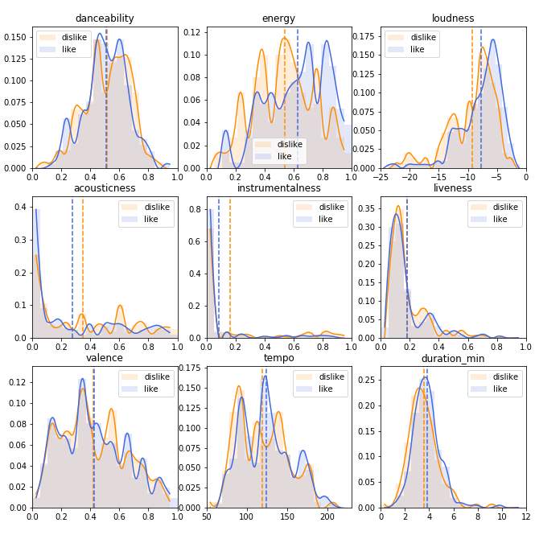

Data Products
Programming projects I have developed or contributed to. Include: 3D visualizations, algorithm application, data science, and front-end development.
Subhalo Visualizer
Lorenz System
Game of Life
Spotify Analysis
Utah Teapot

Barnes-Hut